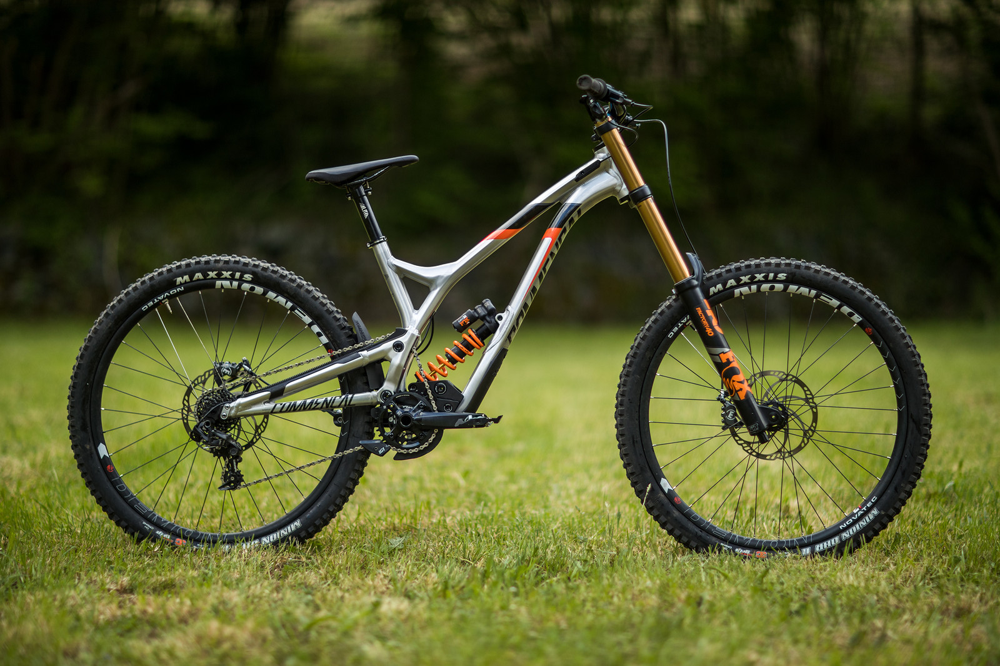

Даунхилл – скоростной спуск, ландшафт может быть как естественный, так и искусственный. Корни деревьев, камни, дропы, средние и большие трамплины. Перепад высот на даунхильной трассе может достигать пятисот метров.
Пример велосипеда для данной дисциплины:

Особенности велосипеда:
- Рама: низкий центр тяжести и меньший угол наклона рулевой колонки помогают не клюнуть носом на спуске
- Подвеска: около 200мм
- Колёса: 29, 27,5 или 26 дюймов, но 26 давно не в моде
- Вилалка: мягкая с ходом около 200мм
- Трансмиссия: передняя звезда с успокоителем цепи(чтобы не слетала при тряске), кассета 7-10 звёзд(самая большая звезда 25-10 зубьев)
- Тормоз: и задний и передний, гидравлика, с большими тормозными дисками